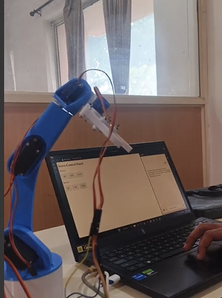
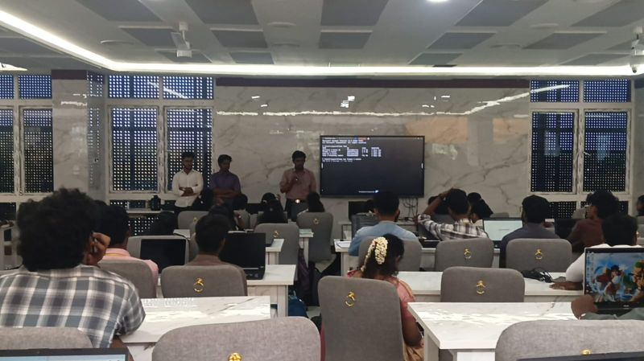
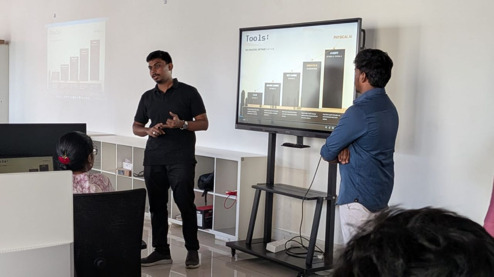

PORTFOLIO / 2026AI SYSTEMS / AGENTS / LANGUAGE MODELSCOIMBATORE, INDIA
AI engineer · Agentic systems · Full-stack products
Jayaragul NBuilding AI that
gets things done.
I’m an AI and agentic engineer based in Coimbatore, India. I build language models, agents that use tools, deep learning and OpenCV applications, and full-stack products—starting with the problem, and following through to the working system.
Areas of inquiry
Agent architecture / Language models / Deep learning / OpenCV / Optimisation / Robotics
01 / UNDERSTAND THE DOMAIN02 / BUILD THE MECHANISM03 / MEASURE THE FAILURE04 / SHIP THE PROOF
01 · Selected work
Ideas, built into systems.
A selection of AI agents, language models and applied engineering projects. Explore the source and the decisions behind the work.
Agent Harness
A factory AI copilot with guarded tool execution, inspectable traces and behavioral evaluations.
It turns natural-language requests into guarded, validated tool calls for inventory checks, machine requirements and risk reporting. Every run is traceable, business facts stay inside deterministic tools, and regressions are measured through a behavioral evaluation harness.

An AI news pipeline that can refuse to publish
A daily AI paper backed by scheduled research, source validation and explicit editorial gates. The public digest and wire remain deterministic and dependency-free.
27M parameters · trained end-to-end
A language model, built from first principles
Tokenizer, transformer blocks, training loop and generation—built by hand on TinyStories to understand every layer of the system.

Motion that doesn’t jerk
A robotic arm with real-time motion profiling, using planned acceleration and deceleration instead of abrupt point-to-point motion.
SANKHYA: results that come with proof
A native C/CUDA optimisation core with proof-checked simplex, sparse LU, MILP branch-and-bound and GPU methods for LP and convex QP.
Thulir: practical guidance for smallholder farmers
A Tamil-and-English, voice-first farming companion. Deterministic engines own crop rankings and dosage; AI explains the result and interprets images.
Classroom Face Counting and Attendance Recognition
Estimating classroom strength and identifying students from a photograph captured by a single camera.
I developed this experimental computer vision project in my second year. The system detects and counts visible faces, then crops each face for recognition. During enrollment, around 100 photographs of each student are converted into face embeddings—numerical representations of facial features—and stored in a reference database. Classroom embeddings are compared against these references to identify students and generate attendance results.
Detect & count facesCrop & generate embeddingsCompare with enrolled identities
Experimental prototype. The attendance pipeline and face-counting web interface were developed separately. Broader accuracy testing and full integration are future improvements.
My contributions, example & key learning
My contributions
- Experimented with Haar cascades, MTCNN and RetinaFace for classroom face detection.
- Built face-cropping and student embedding generation workflows.
- Used DeepFace with VGG-Face embeddings and explored cosine and Euclidean distance for identity matching.
- Investigated low-light images, image enhancement and detection thresholds.
- Created a Flask interface for uploading classroom images and displaying detected faces and counts.
Example workflow
A classroom photograph containing 35 visible faces produces a detected face count and individual crops. Each crop is compared with enrolled student embeddings to find a matching identity; faces without an accepted match remain unmatched. This illustrates the workflow, rather than a measured accuracy result.
Key learning
Detecting a face and correctly identifying a student are separate challenges. Lighting, face size, image quality and matching thresholds all affect the final attendance result.
02 · How I think
Understanding first.
Building second.
The hard part is rarely writing the code. It is knowing what should be built, what the domain demands, and how success should be measured.
I’m Jayaragul N, an AI engineer at Genorai in Coimbatore, Tamil Nadu, India. My work spans agentic AI, language models, deep learning, computer vision with OpenCV and full-stack development.
Education
B.Tech in Artificial Intelligence & Data Science
Batch of 2027
I start with the system: the people using it, the constraints around it, and the signal that proves it works. Then I choose the tools. That approach has taken me from training a language model from scratch to modeling factory bottlenecks and real-time robot motion.
I love reading research papers and exploring how the ideas work in practice. Deep learning and computer vision are particular interests: I enjoy tracing a method back to its foundations, experimenting with it, and understanding where it breaks down.
Find the real problem
Separate symptoms from root causes before choosing an architecture.
Make the system observable
Design the feedback that tells us whether the solution is working.
Ship the smallest honest proof
Build enough to test the riskiest assumption, then learn quickly.
Engineering toolkit
Agents + language models
Agent orchestration · context engineering · tool calling · memory · MCP · RAG · evaluations · guardrails · fine-tuning · PyTorch
Backend + product
Python · FastAPI · Django · Flask · REST APIs · SQL · MongoDB · React · TypeScript · JavaScript
Deep learning + computer vision
PyTorch · TensorFlow · OpenCV · RetinaFace · DeepFace · VGG-Face · scikit-learn · NLP · NumPy · SciPy · pandas
Systems + shipping
Google Cloud · GitHub Actions · Git · Linux · Linux RTOS · C · CUDA · deployment · observability
03 · Experience, education + recognition
Experience & education.
Engineering, teaching and community work that compound into stronger products.
B.Tech · Artificial Intelligence & Data Science
Bachelor of Technology in Artificial Intelligence & Data Science · Batch of 2027
AI Engineer · Genorai
Building agentic automation workflows and generative AI solutions on Google Cloud, from prototype through production.
Winner — Tech for Good · GDG Coimbatore
Best Use of AI for Zero Hunger & Economic Growth at the Build with AI hackathon.
Vice President · The Exypnos
Leading AI and data-science initiatives, hackathons, workshops and a growing student technology community.
Google Student Ambassador · Google for Developers
Led hands-on LLM sessions and helped students turn concepts into working AI applications.
Top 5 of 70+ teams · ML.CBE GenAI Hackathon
Built a FinTech intelligence solution using applied AI and machine learning.
04 · Public speaking
Teaching what I build.
Technical sessions that move from first principles to live, working systems.

KALAM 2026 · EXYPNOS
Into the LLM
Co-led a technical session with live demonstrations on Transformers, fine-tuning and agentic AI.
Technical Speaker
CBE Devs
AI Harness: From Scratch to Product
Led a practical deep dive into context engineering, tool calling, memory, MCP and agent orchestration.
Technical Speaker & Community LeadA little more context
People, problems
and possibilities.
Who is Jayaragul N?
Jayaragul N is an AI engineer at Genorai, based in Coimbatore, Tamil Nadu, India. His work covers agentic AI, large language models, applied machine learning and full-stack products.
What kind of AI agents do you build?
I build agentic workflows that connect language models to tools and domain logic. Agent Harness, my factory AI copilot project, explores planning, guarded tool calls, memory, traceability and behavioral evaluations. Explore my agentic engineering work.
Where can I see your work or collaborate?
Explore the project source on GitHub, connect on LinkedIn, or email jayaragul.in@gmail.com about AI engineering roles, applied ML and product collaborations.
05 · Start a conversation
Have a meaningful problem
worth solving?
I’m open to AI engineering roles, applied-ML collaborations and ambitious product work.
jayaragul.in@gmail.com ↗
Coimbatore, Tamil Nadu, India